Welcome to a snapshot of a few of the various projects I've created.
Feel free to explore these maps, and develop a sense of my skills, interests, and project history, ranging from print maps to interactive web pages.
If you'd like to see more, feel free to reach out for more in-depth insight as to these maps, as well as numerous others I've created over time.
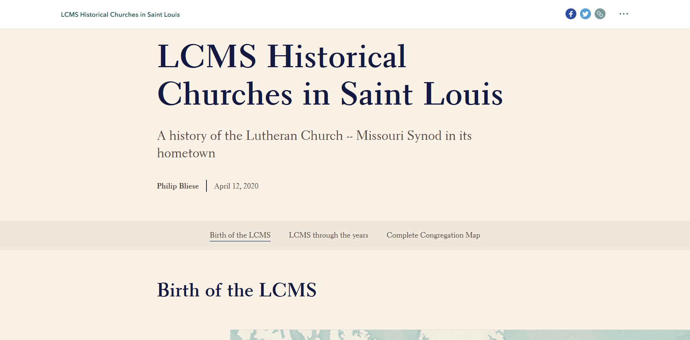
The capstone of my educational experience, this Esri storymap delves into the early history of the Lutheran Church-Missouri Synod in Saint Louis, and how it has grown and changed over time.
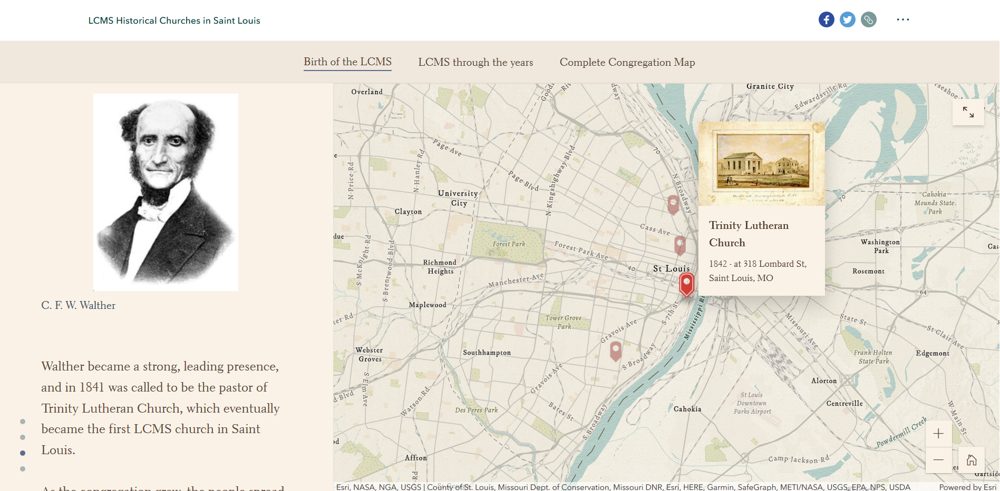
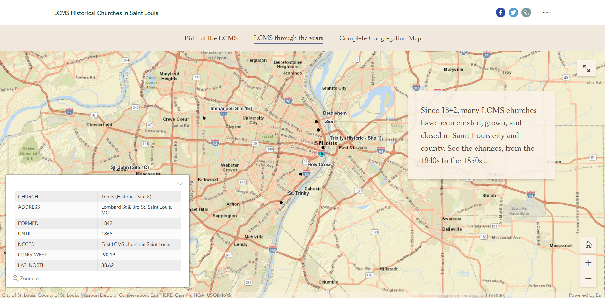
This project allowed me to expand my sights and abilities, learning new skills to communicate ideas. History is a lot like maps- they both show where we've been, how we got to where we are, and can help us understand where we're going in the future.
Working with Esri storymaps was a new experience, and allowed me to explore new tools for creating maps, visualizing data, and telling storys.
The combination of textual information, visualized spatial data, and interaction works together extremely effectively to tell these kinds of stories.
I know I can create many more informative and powerful stories with this format, and look forward to doing so.
The project can be viewed in its entirety here, or via the Capstone tab above. Enjoy!
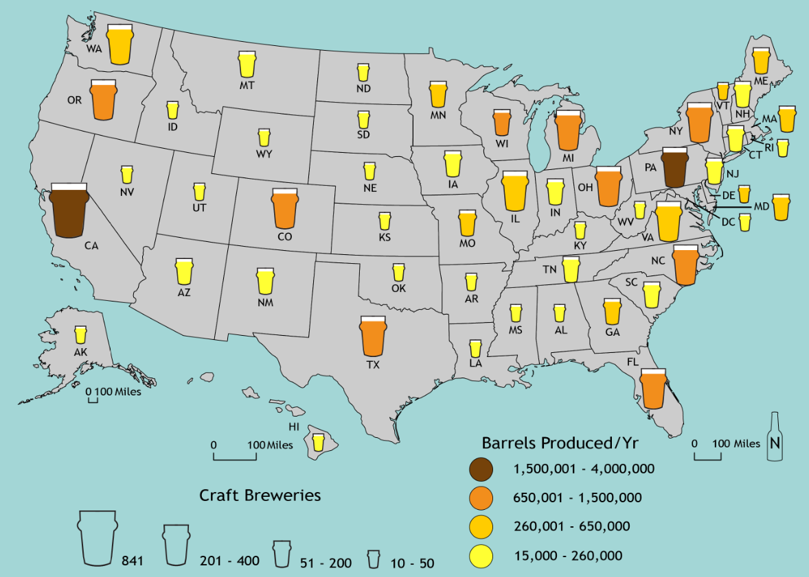
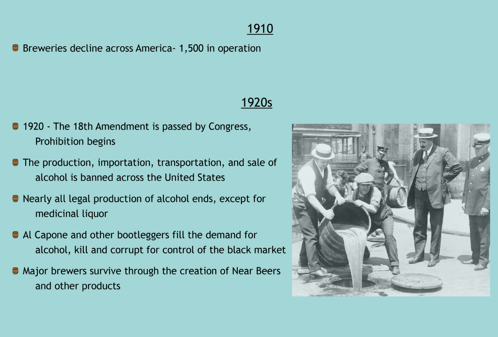
Good food and drink is always welcome, but great craft beer is a particular favorite of mine.
But craft beer hasn't been around forever, so how did we get to where we are today? How did Prohibition, and the recovery from it, affect today's market?
These questions, and more, are investigated in this infograph, A History of (Craft) Beer in America.
The infograph can be viewed in its entirety
here.
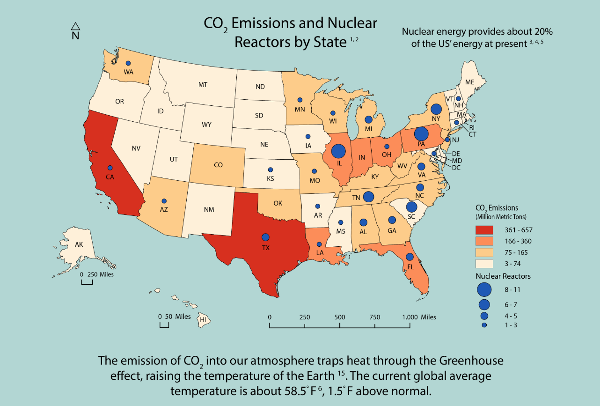
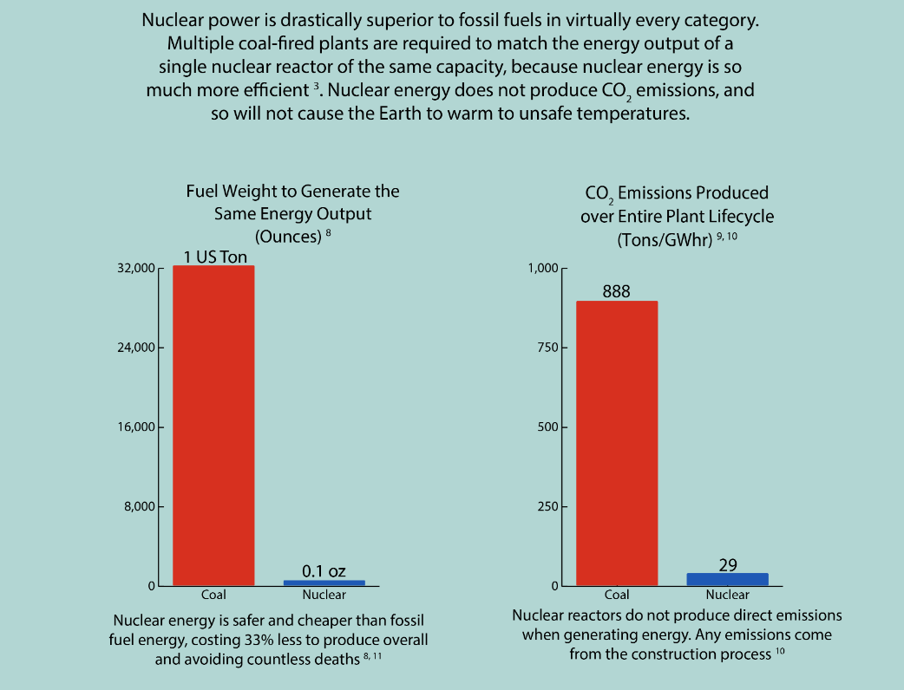
Nuclear Power is an extremely underutilized energy source in the U.S. today.
These are selected portions of a persuasive infographic, which is intended to educate readers about the benefits of nuclear power, compared to fossil fuels.
Nuclear power is superior to fossil fuels in virtually every category, but is not used nearly as much. As such, I created this infograph to argue that nuclear energy should be expanded in the U.S..
It utilizes both maps and graphics to push for this, and a greener tomorrow. The infograph can be viewed in its entirety
here.
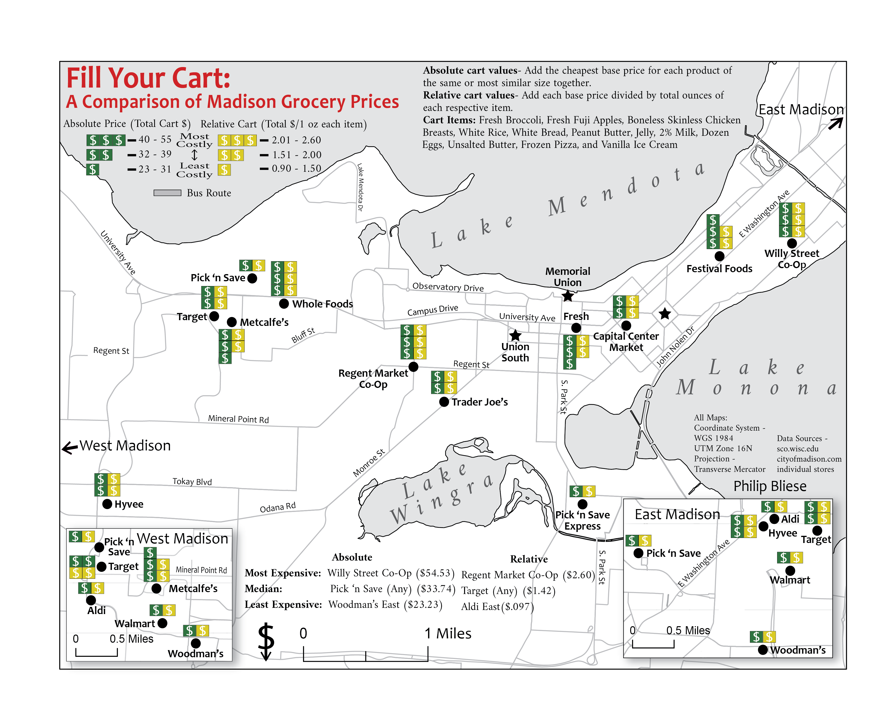
Food is a necessity for everyone, but many are on a budget, especially college students. Due to that, these individuals need to make smart choices when deciding what they will eat in the near future.
This project assists students, and others, in Madison to make these economic choices when shopping for groceries by identifying those stores that have consistently good prices, and those that are more expensive.
Using this, they can make wise decisions for themselves and their checkbook.
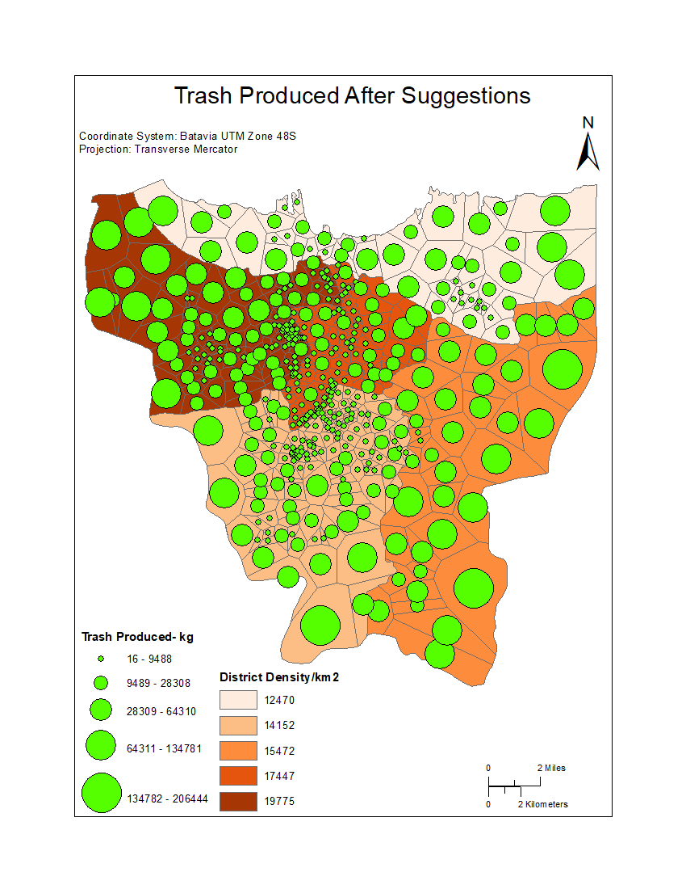
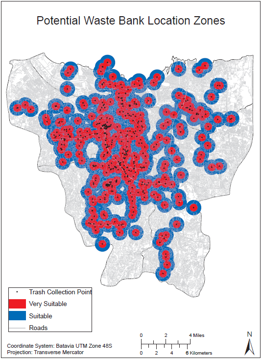
These maps are outputs from a team project I worked on focusing on the problem of waste management in Jakarta, Indonesia.
By analyzing how much trash was produced in the city, and where people produced it, we determined which trash collection locations were under the greatest strain.
From there, we were able to suggest additional trash collection locations to ease the strain and manage the waste more effectively.
We also determined where additional Waste Banks could be located to better manage recycle, cleaning up the environment and bolstering the economy.
The full report can be seen
here.
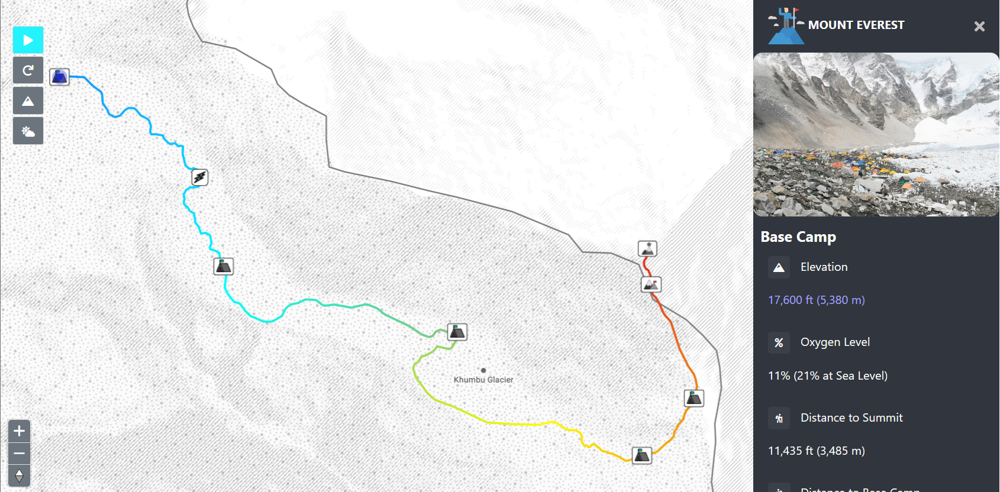
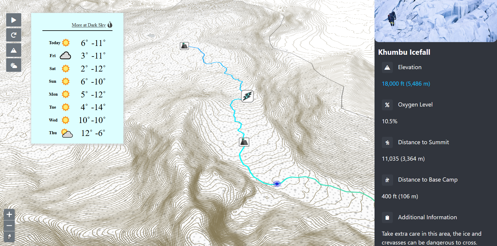
These images are of an interactive Everest map I assisted my team in the creation of.
It depicts the ideal climbing route along the South Col route, from base camp to the summit, detailing important points along the way, such as camp locations and terrain features.
This map is intended to be both educational to those who wish to learn more about climbing the tallest mountain in the world, as well as inform and assist those preparing for the ascent.
Interactive features to assist these goals include pan and zoom functions, elevation isolines, route animation, current weather conditions, and several other features.
{kind=link}
{kind=link}